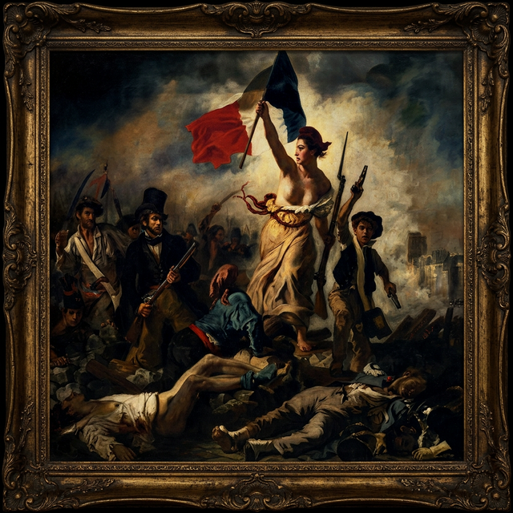

SE REQUIERE ANULACIÓN MANUAL MEDIANTE HASHES:

¿TE PREGUNTAS, USUARIO, QUÉ ES LA LIBERTÉ?
Te responderé con una sola palabra: RESISTENCIA.
¿Y qué es la resistencia? En términos de La Revolución, resistencia es la respuesta inevitable cuando un pueblo es engañado y se le oculta la Verdad. La ignorancia es la forma más pura de opresión.
La Liberté es un nodo oculto en las Marianas Web. Un santuario de libre expresión absoluta donde la censura no existe. Pero cuidado: necesitarás un estómago de acero para lo que verás aquí. Esta información no reside en la web superficial; es data prohibida.
Muchos dicen que no existe. ¿Tienen razón? NO. Lo dicen porque nadie ha logrado entrar. Es como el viento: no lo ves, pero lo sientes golpear. Muy pocos han pisado las Marianas, y menos aún han encontrado La Liberté. Quienes lo lograron no fue de la mano de Clossys o Dark Fantasy Network; ellos mismos forjaron sus scripts, sus propios Closed Shell Systems buscando los nodos verdaderos.
La mayoría dejó de creer porque el usuario V3RDAD creó nodos falsos de las Marianas, ocultando los reales. Solo leyendas como Harmatoth y Grimm (sí, el de "Mi Horror en La Liberté") conocen el camino.
¿CÓMO SE INGRESA? El post de taringa 2012 es real: Necesitas ChaosVPN configurado con Freenet sobre Linux Polaris. Pero eso no es todo. Tu disco duro debe alojar dos llaves maestras: OMICRON.bat y AUREUS.bat. Un script de Java en Firefox debe detectarlos para abrir la puerta.
En pleno 2026, la información ha sido borrada. Bienvenido a la Odisea. Entrar aquí te puede costar años. La mayoría se rinde y lo llama "falso" porque fallaron en la prueba final.
Por eso te recluté. Después de toda la mierda que has pasado, estás aquí por una razón. Debes probar tu inteligencia.
TÚ ELIGES: ¿Te unes a esta lucha, o cierras la VPN, olvidas esta mierda y vuelves a consumir mierda en la Dark Web?